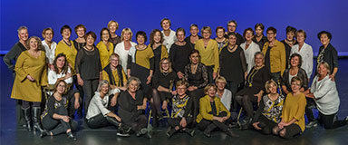

<div class="event-info">
	<div>
		<div class="img-wrap">
	
		</div>
		<div class="songs">
			<p title="Marvin Hamlisch">They’re Playing My Song</p>
			<p title="Avici">Wake Me Up</p>
			<p title="Chorus Line">What I Did For Love</p>
			<p title="Gloria Gaynor">I Wll Survive</p>
			<p title="Ella Fitzgerald">Blue Skies</p>
			<p title="Michael Buble">Everything</p>
			<p title="Irene Cara">What A Feeling</p>
			<p title="BLØF">Omarm Me</p>
		</div>
		<div class="content-wrap">
    <p><strong>Zanggroep Experiment uit Hoofddorp</strong></p>
	<p>Zanggroep Experiment bestaat uit 40 vrouwen afkomstig uit de Haarlemmermeer.</p>
	<p>Het repertoire bestaat uit Engelse, soms Nederlandse popmuziek uit de jaren 70 tot nu.</p>
	<p>Zij treden regelmatig op en doen mee aan diverse korendagen.</p>
	<p>&nbsp;</p>
	<p>Dirigent: Dirigent: Wendy Vos / Oksana Polman</p>
	<p>&nbsp;</p>
	<p><a href="https://www.zanggroepexperiment.nl" target="_blank">https://www.zanggroepexperiment.nl</a></p>
	<p><a href="https://www.facebook.com/Experiment-Hoofddorp-730780283606649/" target="_blank">https://www.facebook.com/Experiment-Hoofddorp-730780283606649/</a></p>
		</div>
	</div>
</div>
